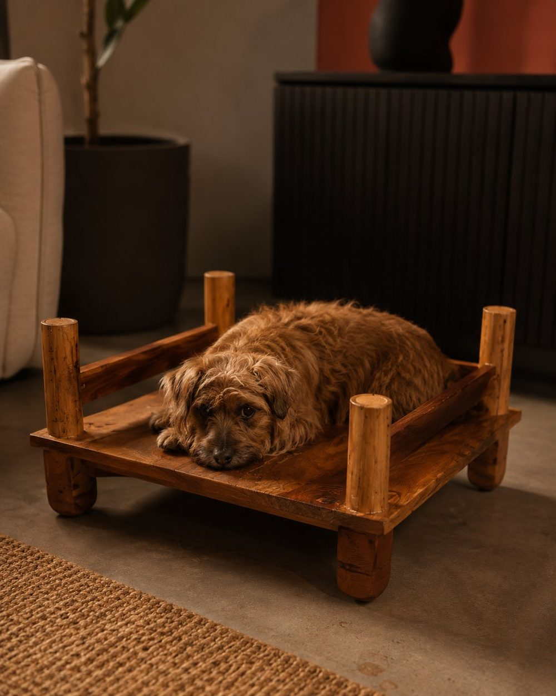

protótipo v2 · madeira de reusoA madeira desta Beni veio de um móvel que ia para o descarte. Foi triada, tratada, cortada e envernizada à mão — e agora começa a segunda vida dela na sua sala, com alguém de quatro patas por cima. Risco se lixa. Perna se troca. História, ela acumula.